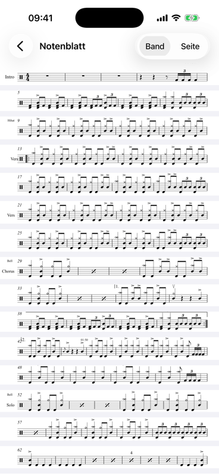
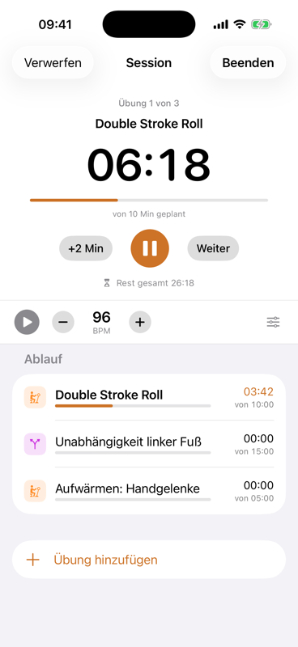
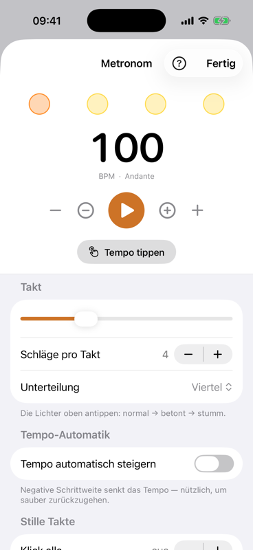
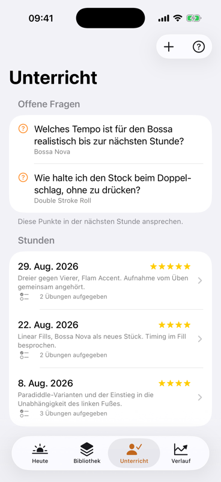
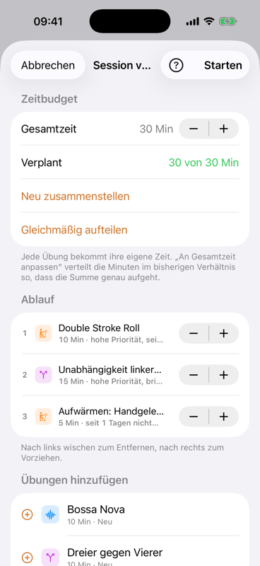
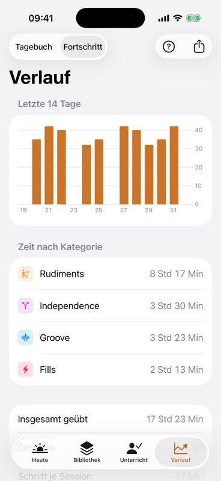
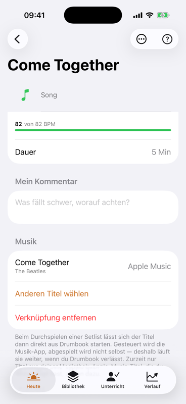
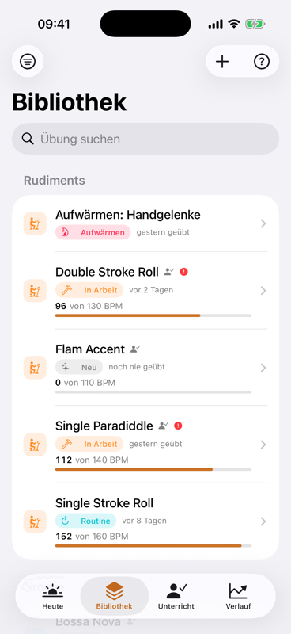
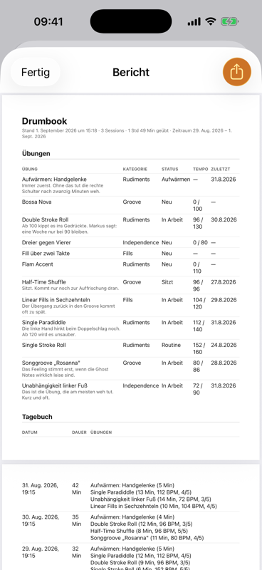

Für iPhone und iPad
Üben mit Plan statt nach Gefühl.
Drumbook ist das Übetagebuch fürs Schlagzeug. Es stellt die heutige Übeliste zusammen, hält mit zwei Uhren die Zeit, gibt das Tempo vor und merkt sich, was der Lehrer gesagt hat. Damit am Ende der Woche nicht nur ein Gefühl steht, sondern ein Verlauf.
- Alles bleibt auf dem Gerät
- Kein Konto, keine Anmeldung
- Kein Tracking, keine Werbung
Seit dem 2. September: Drumbook läuft über TestFlight — Apples Weg, eine App vor dem Verkauf testen zu lassen. Bisher im kleinen Kreis, damit die ersten Fehler nicht bei dir landen. Als Nächstes kommt die offene Testrunde, und wer auf der Liste steht, bekommt den Link zuerst. Im App Store gibt es Drumbook noch nicht.
Warum überhaupt
Eine Stunde Üben ist nicht eine Stunde Fortschritt.
Wer ohne Plan ans Set geht, spielt am Ende das, was ohnehin schon sitzt. Die drei Dinge, an denen es meistens hakt:
„Was übe ich heute?"
Die Antwort kommt aus dem Bauch — und der wählt bevorzugt das Angenehme. Die Übung, die schwerfällt, rutscht wochenlang durch.
„Was hat der Lehrer nochmal gesagt?"
Der eine entscheidende Satz aus der Stunde ist am Mittwoch weg. Und die Frage, die man stellen wollte, fällt einem erst auf der Heimfahrt wieder ein.
„Werde ich eigentlich besser?"
Fortschritt am Schlagzeug ist langsam und von innen kaum zu hören. Ohne Zahlen bleibt nur ein Gefühl — und das trügt in beide Richtungen.
Was Drumbook macht
Acht Dinge, die eine Übesession besser machen.
Beide Hände am Stock, keine zum Blättern
Notenblätter haben Seiten, und wer spielt, kann nicht umblättern. Drumbook schneidet deshalb die Notenzeilen aus deinem PDF heraus und setzt sie über die volle Breite untereinander — ein durchgehendes Band statt einzelner Seiten. Damit verschwindet das Umblättern als Problem, weil es keine Seiten mehr gibt.
- Die Zeilen findet die App selbst — an fünf Linien in gleichem Abstand. Das klappt bei gedruckten Blättern genauso wie bei abfotografierten, und bis etwa drei Grad Schräglage rechnet sie das Blatt gerade.
- Abschnittsnamen, Taktzahlen und Wiederholungszeichen bleiben dran. Seitlich wird bis zur letzten Tinte geschnitten statt bis zum Blattrand, und zwischen zwei Zeilen genau dort, wo nichts steht.
- Auf dem iPad wird eine Notenzeile gut doppelt so groß wie auf Papier, auf dem iPhone im Querformat rund anderthalb Mal. Im Hochformat gewinnt sie keine Größe, aber Ruhe: kein Rand, kein Blättern, jede Zeile an derselben Stelle.
- Der Bildschirm bleibt wach, solange die Noten offen sind — sonst wird es beim zweiten Takt dunkel.
- Ist die Erkennung sich nicht sicher, sagt sie das und zeigt die gedruckte Seite, statt ein Band mit einer fehlenden Zeile zu bauen. Über einen Umschalter kommst du ohnehin jederzeit auf die Originalseite.
Noch rollst du das Band mit der Hand — dass es beim Spielen von selbst mitläuft, ist der nächste Schritt.

Die Uhr denkt mit
Eine Session ist kein Wecker, sondern ein Ablaufplan. Du legst fest, wie lange du insgesamt Zeit hast; jede Übung bekommt ihre eigene Soll-Zeit. Zwei Countdowns laufen gleichzeitig: einer für die Übung, einer für den ganzen Abend.
- Automatischer Wechsel mit kurzer Pause, Ton und spürbarem Signal — du musst das Handy nicht anfassen.
- Überziehen erlaubt. Wer bei einer Übung länger bleibt, nimmt den anderen nichts weg — die Restzeit rechnet ehrlich.
- Danach kurz bewerten: erreichtes Tempo und ein Urteil je Übung, eins für den ganzen Abend.

Ein Klick, der nicht eiert
Das Metronom rechnet jeden Schlag im Voraus in den Ton hinein statt sich auf einen Timer zu verlassen. Deshalb bleibt es auch nach zehn Minuten dort, wo es sein soll. Und jede Übung merkt sich ihre eigene Einstellung.
- Jeder Schlag einzeln: betont, normal oder stumm. Unterteilungen bis zur Sextole.
- Tempo tippen, Tempo automatisch steigern, nach einer festen Zahl Takte aufhören.
- Stille Takte fürs Timing: der Klick setzt aus, du spielst weiter — und hörst beim Wiedereinsetzen, ob du noch drauf bist.
- Läuft bei gesperrtem Bildschirm weiter und lässt sich von dort bedienen.

Was der Lehrer sagt, ist nächste Woche noch da
Zu jeder Stunde hältst du fest, worum es ging und wie der Lehrer es eingeschätzt hat. Die aufgegebenen Übungen wandern direkt in die Bibliothek — und der Generator weiß, dass sie Vorrang haben.
- Fragen sammeln, sobald sie beim Üben auftauchen. In der nächsten Stunde stehen sie oben auf dem Bildschirm.
- Notenblätter dazu: abfotografiert, eingescannt oder als PDF — samt Sprachnotizen aus der Stunde.
- Ein Bericht als PDF zeigt dem Lehrer, was seit der letzten Stunde tatsächlich passiert ist.

Was sonst noch drin ist

Die Übeliste stellt sich selbst zusammen
Sag Drumbook, wie viele Minuten du hast — den Rest macht der Generator. Er zieht heran, was zu lange liegen geblieben ist, achtet darauf, dass nicht dreimal dasselbe Thema drankommt, und lässt Wichtiges zuerst durch.

Der Beweis, dass es vorangeht
Jede Session landet im Verlauf. Nach ein paar Wochen siehst du schwarz auf weiß, wie viel du geübt hast, wohin die Zeit geflossen ist und wo das Tempo tatsächlich gestiegen ist.

Zum Original mitspielen
Ein Song sitzt erst, wenn er zur Aufnahme sitzt. Häng den echten Titel an eine Übung oder einen Song — aus deiner Mediathek, die Apple-Music-Titel darin inbegriffen. Beim Durchspielen einer Setlist startest du ihn dann aus Drumbook heraus.

Deine Übungen, sortiert
Die Bibliothek hält alles zusammen: was die Übung soll, welches Tempo das Ziel ist, wo du gerade stehst, wann sie zuletzt dran war. Songs laufen getrennt mit — sie sollen die Übeliste nicht fluten.
Und außerdem
Der Kleinkram, der im Alltag den Unterschied macht.
Material an der Übung
Notenblätter scannen oder abfotografieren, PDFs importieren, Sprachnotizen aufnehmen, Links hinterlegen. Beim Üben liegt alles eine Berührung entfernt — Notenblätter als Band, alles andere zoombar auf dem ganzen Bildschirm.
Erinnerungen, die passen
Täglich zur festen Uhrzeit — oder erst dann, wenn du eine selbst gewählte Zahl von Tagen nicht am Set warst. Kein Dauerfeuer.
Setlists für die Probe
Songs in der Reihenfolge des Abends, jeder mit seinem Tempo und seiner Aufnahme. Beim Durchspielen steht das Blatt groß, die Knöpfe sind für Hände mit Stöcken gemacht, und der Bildschirm geht nicht zu. Keine Uhr, keine Bewertung — eine Probe ist keine Übesession.
Export und Sicherung
Ein Bericht als PDF für den Lehrer. Und eine vollständige Sicherung als Datei, die sich auch wieder einlesen lässt — mit Anhängen, ohne dass dabei etwas gelöscht wird.
Eine Übung weitergeben
Eine Übung samt Beschreibung und Einstellungen als Datei verschicken. Der andere liest sie ein — ganz ohne Konto, Server oder Einladung.
Hilfe, wo du gerade bist
Auf jedem Bildschirm sitzt ein Fragezeichen. Dahinter steht nicht irgendein Handbuch, sondern die Erklärung genau zu dem, was gerade vor dir liegt.
Auch auf dem iPad
Kein vergrößertes iPhone: Der Inhalt bleibt in einer lesbaren Spalte, statt sich über dreizehn Zoll zu strecken, und die Session-Uhr wird größer — auf dem Notenständer steht das Gerät weiter weg.
Deine Daten
Bleibt alles hier.
Drumbook ist eine App ohne Rückkanal. Sie hat keine Anmeldung, kein Konto und keine Serververbindung — nicht als Einstellung, sondern weil so etwas schlicht nicht eingebaut ist. Was du übst, geht niemanden etwas an.
- Auf dem Gerät gespeichertÜbungen, Sessions, Notizen und Notenblätter liegen in der App auf deinem iPhone — nicht in einer Wolke.
- Nichts wird gemessenKeine Analyse-Werkzeuge, keine Absturzberichte an Dritte, keine Werbekennung. Die App zählt nicht mit, wie du sie benutzt.
- Kein Konto nötigKein Passwort, keine E-Mail-Adresse, keine Anmeldung über andere Dienste. Installieren und loslegen.
- Du kommst jederzeit rausDie vollständige Sicherung ist eine offene Datei, die du selbst besitzt. Kein Datenschatz, den jemand für sich behält.
Für Schlagzeuglehrer
Sie üben zu Hause. Sie wissen nur nicht, was.
Die ehrlichste Antwort auf „Und, hast du geübt?" ist meistens ein Schulterzucken. Nicht weil gelogen wird — sondern weil sich nach einer Woche niemand erinnert, wie lange, woran und mit welchem Tempo.

Was Sie zur nächsten Stunde in der Hand halten
Ein Bericht als PDF, den der Schüler mit zwei Tipps erzeugt — wahlweise genau für den Zeitraum seit Ihrer letzten Stunde. Darin steht, was sonst niemand weiß:
- Jede Übesession mit Datum, Dauer und Übung — und je Übung das erreichte Tempo samt Selbsteinschätzung.
- Ist- und Zieltempo nebeneinander: „96 von 130" sagt Ihnen in einer Zeile, was zehn Minuten Nachfragen nicht ergeben.
- Die Notizen des Schülers — „Ab 100 kippt es ins Gedrückte". Genau da setzen Sie die Stunde an.
- Songs bleiben draußen. Der Bericht zeigt, was geübt wird — nicht, was nebenbei gespielt wurde.
Ihre Ansage überlebt die Woche
Was Sie aufgeben, trägt der Schüler in die Stunde ein — samt Ihrer Einschätzung. Diese Übungen wandern in seine Bibliothek und bekommen beim Zusammenstellen der Übeliste Vorrang. Der Satz, auf den es ankam, steht am Mittwoch noch da.
Er kommt mit Fragen, nicht mit „ähm"
Fragen, die beim Üben auftauchen, sammelt die App. In der nächsten Stunde stehen sie oben auf dem Bildschirm. Sie beantworten drei konkrete Fragen, statt die Stunde mit Suchen zu beginnen.
Sie müssen gar nichts tun
Kein Konto, keine Einrichtung, keine Lehrer-Fassung, keine Schulung. Sie empfehlen die App — den Rest macht der Schüler. Wenn Sie mögen, schicken Sie ihm eine Übung als Datei; er liest sie mit einem Tipp ein, mit Beschreibung und Tempo.
Kein Datenschutz-Problem an der Backe
Wer Minderjährige unterrichtet, überlegt zweimal, welche Plattform er empfiehlt. Hier gibt es keine Anmeldung, keinen Server und keine Schülerdaten bei Ihnen — alles bleibt auf dem Gerät des Schülers. Sie bekommen ein PDF, sonst nichts.
Was Drumbook nicht ist: keine Lehrplattform, kein Klassenbuch, kein Portal mit Schülerverwaltung. Es gibt keinen gemeinsamen Zugang und keine Übersicht über mehrere Schüler — das wäre eine ganz andere App. Drumbook macht einen Schüler zu einem, der weiß, was er geübt hat.
Stand der Dinge
Was fertig ist — und was nicht.
Drumbook ist ein Projekt aus dem Proberaum, kein Produkt einer Firma. Deshalb steht hier ehrlich, wo es gerade steht.
Läuft und wird benutzt
- Bibliothek, Sessions mit Ablaufplan und doppelter Uhr
- Metronom, auch bei gesperrtem Bildschirm
- Unterricht, Fragen an den Lehrer, Verlauf mit Diagramm
- Material, Erinnerungen, Setlists, Übelisten-Generator
- Das Notenband: die Zeilen aus dem PDF, über die volle Breite untereinander
- Bericht als PDF, Sicherung mit Wiederherstellung
- Titel aus der Mediathek verknüpfen und beim Üben abspielen
- Läuft auf iPhone und iPad, hoch und quer, auf Deutsch und auf Englisch
- Die erste Testfassung über TestFlight, seit dem 2. September
Steht noch aus
- Der Weg in den App Store — bis dahin gibt es die App nur über TestFlight
- Die offene Testrunde für alle auf der Liste — sie braucht noch Apples Prüfung
- Dass das Notenband beim Spielen von selbst mitläuft — bisher rollst du es mit der Hand
- Auf dem iPad das geteilte Fenster neben einer anderen App
- Die Fassung für Android — sie kommt, aber nach iPhone und iPad
- Der Apple-Music-Katalog und Spotify — bisher geht nur, was in deiner Mediathek steht
- Ein Abgleich zwischen mehreren Geräten — später, wenn überhaupt
Fragen
Was Leute wissen wollen.
Kann ich Drumbook schon benutzen?
Fast. Seit dem 2. September läuft Drumbook über TestFlight, aber vorerst nur in einem kleinen Kreis. Die offene Runde muss Apple erst prüfen — das dauert ein bis zwei Tage, sobald sie eingereicht ist. Wenn du deine Adresse hinterlässt, bekommst du den Link, sobald es so weit ist — und sonst keine Post.
Was wird das kosten?
Drumbook wird ein Abonnement — voraussichtlich zwischen drei und fünf Euro im Monat, mit einem deutlich günstigeren Jahrespreis. Vorher kannst du es in Ruhe ausprobieren: einen Testzeitraum bekommt jeder, ohne Bedingungen. Werbung wird es nicht geben.
Sind im Abo alle Funktionen drin?
Ja, restlos. Es gibt keine Fassung, in der der Generator fehlt, das Metronom weniger kann oder die Zahl der Übungen begrenzt ist. Wer zahlt, hat alles — und wer testet, testet auch alles. Ein Übetagebuch, das an der interessanten Stelle nach Geld fragt, wäre keins.
Läuft Drumbook auf dem iPad?
Ja, vollständig — und nicht als vergrößerte iPhone-App. Auf einem iPad Pro 13" ist einmal alles durchgespielt: Übesessions, Metronom, Material, der Bericht für den Lehrer, Übungen teilen und empfangen. Der Inhalt steht dabei in einer lesbaren Spalte, statt sich über die ganze Breite zu ziehen, und die Session-Uhr wird größer, weil das iPad weiter weg steht als ein Telefon.
Hoch und quer, beides geprüft. Was fehlt, ist das geteilte Fenster neben einer anderen App. Und weil alle Daten auf dem Gerät bleiben, führen iPhone und iPad getrennte Tagebücher — hinüber kommst du über die Sicherung.
Gibt es das für Android?
Ja, geplant ist es. Den Anfang machen iPhone und iPad — dort läuft die App heute täglich. Android kommt danach; ein Datum dafür gibt es noch nicht. Die knifflige Stelle ist das Metronom: Ein Klick, der nicht wandert, ist auf jeder Plattform eigene Arbeit.
Brauche ich dafür einen Schlagzeuglehrer?
Nein. Der Unterrichts-Teil ist ein Angebot, keine Bedingung. Wer allein übt, benutzt Bibliothek, Sessions, Metronom und Verlauf genauso — der Bereich bleibt dann einfach leer.
Was passiert mit meinen Daten, wenn das Handy kaputtgeht?
Dafür gibt es die Sicherung: eine einzelne Datei mit allem, auch den Notenblättern und Sprachnotizen. Die legst du dort ab, wo du sonst auch sicherst, und liest sie auf dem neuen Gerät wieder ein. Beim Einlesen wird zusammengeführt, nicht überschrieben.
Kann mein Lehrer die App auch benutzen?
Es gibt keinen gemeinsamen Zugang für Lehrer und Schüler — das wäre eine ganz andere App. Was es gibt: den Bericht als PDF, den du dem Lehrer schickst, und einzelne Übungen, die sich als Datei weitergeben lassen.
Übertönt das Metronom überhaupt ein Schlagzeug?
Über den Lautsprecher eines Telefons: nein, jedenfalls nicht zuverlässig. Am Set gehören Kopfhörer dazu. Drumbook weiß das — wenn die Kopfhörer währenddessen abgezogen werden, hält es an, statt plötzlich über den Lautsprecher zu klicken.
Wer steckt dahinter?
Eine Person, die selbst Schlagzeug lernt und die App zuerst für sich gebaut hat. Jede Funktion ist entstanden, weil beim Üben etwas gefehlt hat — nicht, weil sie in einem Vergleich gut aussieht.
Beim Test dabei sein.
Du hörst genau einmal wieder etwas: wenn die offene Testrunde startet und du Drumbook über TestFlight laden kannst — keine Neuigkeiten, kein Rundbrief, nichts dazwischen.
Öffnet dein Mailprogramm mit fertigem Text. Geht das bei dir nicht, schreib einfach von Hand an silvio@drumbook.de.
Deine Adresse wird nur dafür benutzt, dir diese eine Nachricht zu schicken — und danach gelöscht.